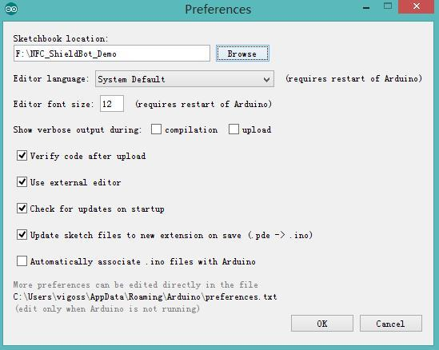
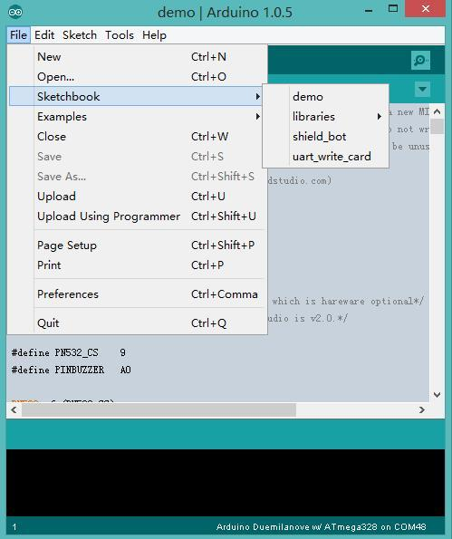
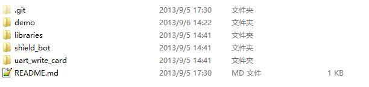

In another document, we have made a detailed introduction about Library, we know that Library really very easy to use! Download a Library, put it to the Arduino libraries directory, open the example and it works.
However, sometimes we will encounter this problem: You made an interesting demo, this demo needs to contain some libraries, and you would like to share this demo, so you need to send the code to some guys, but there is often a compilation error problem: missing certain library. So you need to send the library to him. If your demo needs a lot of library, these will much more problem.
In fact, Arduino has a Sketchbook can be a good solution to this problem. Sketchbook is actually a folder, you can put it anywhere. Here we will have a try using Sketchbook.
I had written a Sketchbook, you can download here,
Ignore its contents; our purpose is to familiarize you with Sketchbook. After downloading, we put it to F drive.
Open the Arduino IDE, click File-> Preferences, click the pop-up screen:

Point the Sketchbook location to the directory where the downloaded code. And click OK to complete the operation. Close and re-open the Arduino IDE.
Open File -> Sketchbook, you can see a lot of items pop up, such as demo, shield_bot and so on. We click demo, then you can open it, and you can see the code of demo now. You can find this demo contains a lot of libraries that you hadn’t seen before. Then we click compile button, success with no errors, strange thing? In fact, you may had noticed, there is a folder named libraries in NFC_Shieldbot_Demo, yes, the libraries is here.

Thus, when you want to make a demo, you can try to build a Sketchbook, and put the libraries needed to libraries folder of Sketchbook. Just like the Sketchbook you had downloaded minutes ago:
